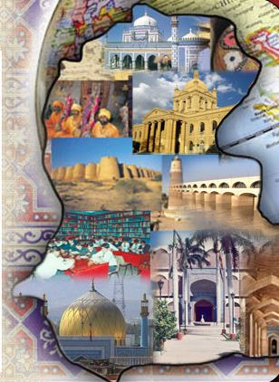

جي سڄڻ سان نيهه لڳو، تن جو ڪجھ به نه وڃي،
جيئن سمنڊ ۾ وهي وڃن، سدائين موتي ٿين
خالق: محمد مزمل
نگران: سر علي رضا ڀنگوار
| لفظ | مطلب |
|---|---|
| لک | نئون ڦرڻو (variable) ٺاهڻ |
| عددي | انگ (Integer) قسم |
| لکت | لکت (String) قسم |
| جيڪڏ | جيڪڏھن شرط (if) |
| ته جيڪڏ | جيڪڏھن ٻي شرط (else if) |
| نه | نه ته (else) |
| جيستائين | ورجاٸي (while loop) |
| ڪر / جيستائين | do-while loop |
| لکيوَ | نتيجو ڏيکارڻ (print) |
| ۽ | Logical AND (&&) |
| يا | Logical OR (||) |
| <, >, <=, >= | تولڻ وارا آپريٽر (comparison operators) |
| +, -, *, /, % | رياضي جا آپريٽر |
| + (Strings) | لکت کي جوڙڻ (String Concatenation) |
| ? : | ٽرنري آپريٽر (Ternary Operator) |
| خاصيت / مفهوم | سنڌي پروگرامنگ | C | Java |
|---|---|---|---|
| ڦرڻو ٺاهڻ | لک عددي x = 5 | int x = 5; | int x = 5; |
| لکت جو ڦرڻو | لک لکت name = "Muhammad Muzamil" | char name[] = "Muhammad Muzamil"; | String name = "Muhammad Muzamil"; |
| جيڪڏ شرط | جيڪڏ (x > 0) { ... } | if (x > 0) { ... } | if (x > 0) { ... } |
| ۽ (Logical AND) | جيڪڏ (x > 0 ۽ y < 10) | if (x > 0 && y < 10) | if (x > 0 && y < 10) |
| يا (Logical OR) | جيڪڏ (x > 0 يا y < 10) | if (x > 0 || y < 10) | if (x > 0 || y < 10) |
| Comparison Operators | <, >, <=, >== موجود | موجود | موجود |
| Math Operators | +, -, *, /, % موجود | موجود | موجود |
| String Concatenation | لکيوَ a + " " + b | strcat(a, b); // manual | System.out.println(a + " " + b); |
| Ternary Operator | لکيوَ x > 5 ? "ھا" : "نه" | printf("%s", x > 5 ? "Yes" : "No"); | System.out.println(x > 5 ? "Yes" : "No"); |
| جيستائين لوپ (While Loop) | جيستائين (x < 10) { } | while (x < 10) { } | while (x < 10) { } |
| لوپ (Do-While) | ڪر { // statements } جيستائين (x < 10) |
do { // statements } while (x < 10); |
do { // statements } while (x < 10); |
| اَئوٽ پُٽ | لکيوَ("Hello") | printf("Hello"); | System.out.println("Hello"); |
| تبصرا (Comments) | // هي هڪ تبصرو آهي // محمد مزمل طرفان پروگرام /* گهڻن لائنن وارو تبصرو */ | // This is a comment // Program by Muhammad Muzamil /* Multi-line comment */ | // This is a comment // Program written by Muhammad Muzamil /* Multi-line comment */ |
لک لکت a = "محمد مزمل"
لک لکت b = "حنان"
لکيوَ a + " ۽ " + b + " جو سلام!"#include <stdio.h>
#include <string.h>
int main() {
char a[] = "Muhammad Muzamil";
char b[] = "Hanan";
char result[100];
strcpy(result, a);
strcat(result, " and ");
strcat(result, b);
strcat(result, " say hello!");
printf("%s\n", result);
return 0;
}public class Main {
public static void main(String[] args) {
String a = "Muhammad Muzamil";
String b = "Hanan";
System.out.println(a + " and " + b + " say hello!");
}
}//١) عمر پرنٽ ڪرڻ جو پروگرام لک عددي عمر = 22 لکيوَ عمر
//٢) محمد مزمل جي نالي سان سلام ڪرڻ لک لکت نالو = "مزمل" لکيوَ "سلام، " + نالو
//٣) ڊگهائي ۽ ويڪر سان ايراضي ڳولڻ لک عددي ڊگهائي = 5 لک عددي ويڪر = 3 لکيوَ "ايراضي: " + (ڊگهائي * ويڪر)
//٤) شهر ۽ ملڪ کي جوڙڻ جو پروگرام لک لکت شهر = "ڪراچي" لک لکت ملڪ = "پاڪستان" لکيوَ شهر + "، " + ملڪ
//٥) ٻن عددي ڦرڻن جو مجموعو لک عددي x = 10 لک عددي y = 20 لکيوَ "مجموعو: " + (x + y)
//١) اسڪور جي بنياد تي گريڊ ڏيکارڻ
لک عددي اسڪور = 85
جيڪڏ اسڪور >= 90 {
لکيوَ "عالي"
} ته جيڪڏ اسڪور >= 80 {
لکيوَ "وڏا"
} ته {
لکيوَ "سٺو"
}
//٢) انگ جو جفت يا فرد هجڻ جانچڻ
لک عددي نمبر = 7
جيڪڏ نمبر % 2 == 0 {
لکيوَ "جفت"
} ته {
لکيوَ "فرد"
}
//٣) موسم جي بنياد تي پيغام ڏيکارڻ
لک لکت موسم = "سرما"
جيڪڏ موسم == "سرما" {
لکيوَ "ٿڌ پوي ٿي"
} ته جيڪڏ موسم == "گرما" {
لکيوَ "گرمي پوي ٿي"
} ته {
لکيوَ "موسم سٺي آهي"
}
//٤) وقت جي بنياد تي سلام ڏيکارڻ
لک عددي وقت = 14
جيڪڏ وقت < 12 {
لکيوَ "صبح جو سلام"
} ته {
لکيوَ "شام جو سلام"
}
//٥) ٻن شرطن کي AND سان جانچڻ
لک عددي x = 10
جيڪڏ x > 5 ۽ x < 20 {
لکيوَ "شرط پوري ٿي"
}
//١) ڳڻپ 1 کان 5 تائين
لک عددي ڳڻپ = 1
جيستائين ڳڻپ <= 5 {
لکيوَ ڳڻپ
ڳڻپ = ڳڻپ + 1
}
//٢) 1 کان 100 تائين عددن جو مجموعو
لک عددي مجموعو = 0
لک عددي n = 1
جيستائين n <= 100 {
مجموعو = مجموعو + n
n = n + 1
}
لکيوَ "1 کان 100 تائين مجموعو: " + مجموعو
//٣) نمبر کي 2 سان ضرب ڪري وڌائڻ
لک عددي نمبر = 2
جيستائين نمبر <= 1024 {
لکيوَ نمبر
نمبر = نمبر * 2
}
//٤) اسٽار سان مثلث ٺاھڻ
لک لکت ستارو = "*"
لک عددي قطار = 1
جيستائين قطار <= 5 {
لکيوَ ستارو
ستارو = ستارو + "*"
قطار = قطار + 1
}
//٥) عدد ۾ ڪيترا عدد آهن ڳڻڻ
لک عددي عدد = 12345
لک عددي وارو = 0
جيستائين عدد > 0 {
وارو = وارو + 1
عدد = عدد / 10
}
لکيوَ "رقمن جو تعداد: " + وارو
//١) ڳڻپ 5 کان 1 تائين گهٽائڻ
لک عددي x = 5
ڪر {
لکيوَ x
x = x - 1
} جيستائين x > 0
//٢) ڳڻپ کي 2 جي قدم سان گهٽائڻ
لک عددي ڳڻپ = 10
ڪر {
لکيوَ ڳڻپ
ڳڻپ = ڳڻپ - 2
} جيستائين ڳڻپ > 0
//٣) ڏنل عدد جي ٽيبل ڏيکارڻ
لک عددي رينج = 3
لک عددي i = 1
ڪر {
لکيوَ "ٽيبل جو " + i + " نمبر: " + (رينج * i)
i = i + 1
} جيستائين i <= 10
//٤) 0 کان 2 تائين ڳڻپ ڪرڻ
لک عددي x = 0
ڪر {
لکيوَ x
x = x + 1
} جيستائين x < 3
//١) فيبوناچي سيريز جو پهريون 10 عدد
لک عددي n = 10
لک عددي پھريون = 0
لک عددي ٻيون = 1
لک عددي ايندڙ = 0
جيستائين n > 0 {
لکيوَ پھريون
ايندڙ = پھريون + ٻيون
پھريون = ٻيون
ٻيون = ايندڙ
n = n - 1
}
//٢) ٽرنري آپريٽر سان شرط جانچڻ لک عددي x = 5 لکيوَ x > 3 ? "ھا" : "نه"
//٣) آرمسٽرانگ نمبر جي سڃاڻپ
لک عددي عدد = 407
لک عددي اصل = عدد
لک عددي مجموعو = 0
جيستائين عدد > 0 {
لک عددي رقم = عدد % 10
مجموعو = مجموعو + (رقم * رقم * رقم)
عدد = عدد / 10
}
جيڪڏ مجموعو == اصل {
لکيوَ اصل + " آرمسٽرانگ نمبر آهي"
} ته {
لکيوَ اصل + " آرمسٽرانگ نمبر ڪو نه آهي"
}
//٤) 1 کان 100 تائين وزير (Prime) نمبر ڏيکارڻ
لک عددي شروع = 1
لک عددي ختم = 100
لکيوَ "بنائب نمبر:"
جيستائين شروع <= ختم {
لک عددي آهي_بنائب = 1
لک عددي ڊويزن = 2
جيستائين ڊويزن < شروع {
جيڪڏ شروع % ڊويزن == 0 {
آهي_بنائب = 0
}
ڊويزن = ڊويزن + 1
}
جيڪڏ آهي_بنائب == 1 ۽ شروع > 1 {
لکيوَ شروع
}
شروع = شروع + 1
}